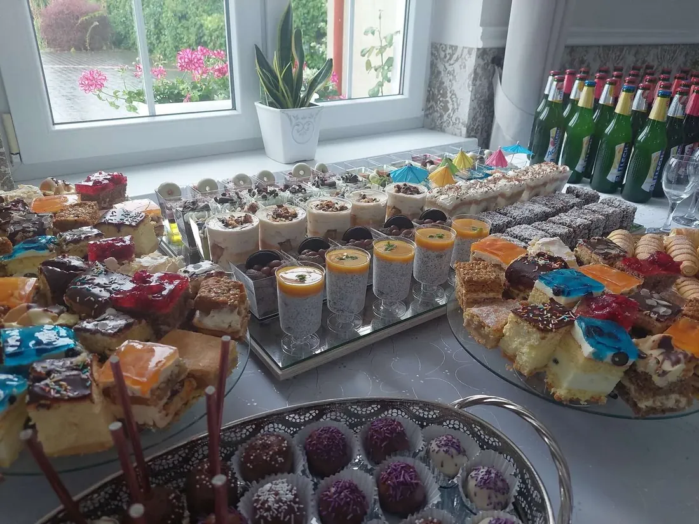
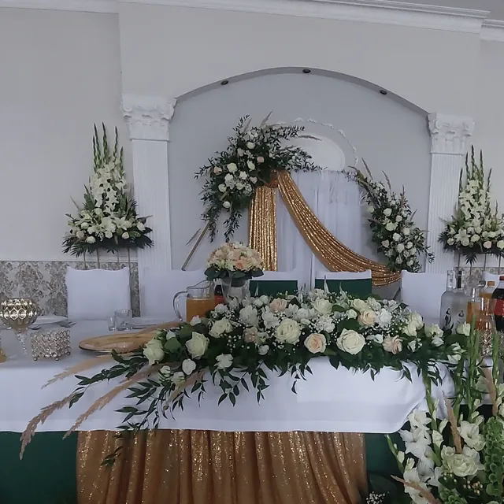
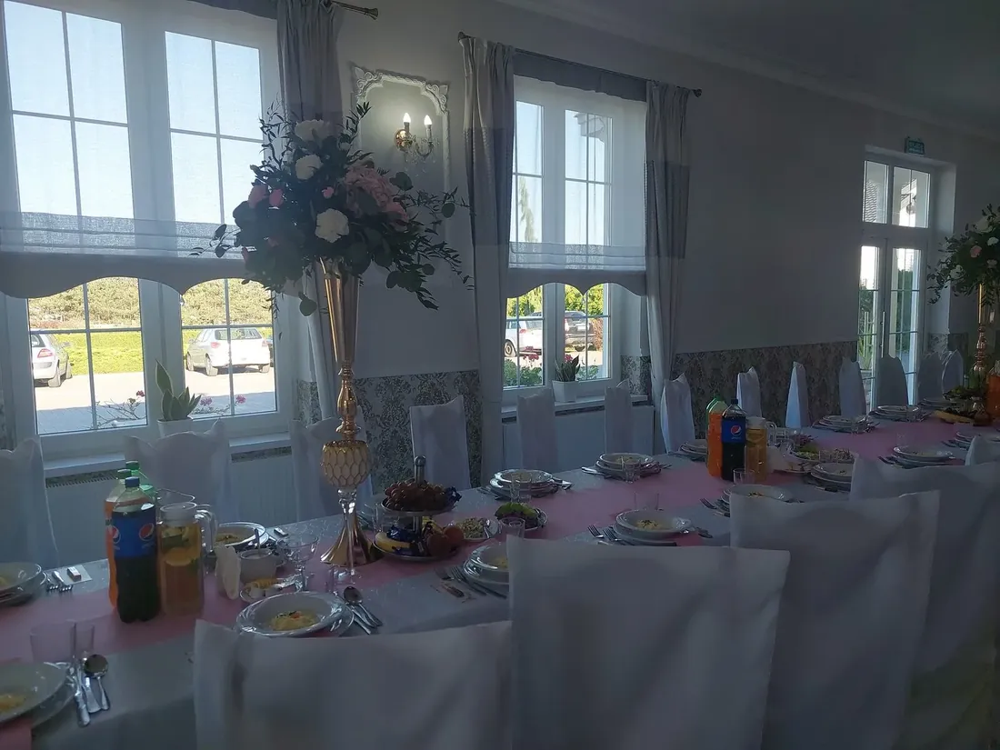
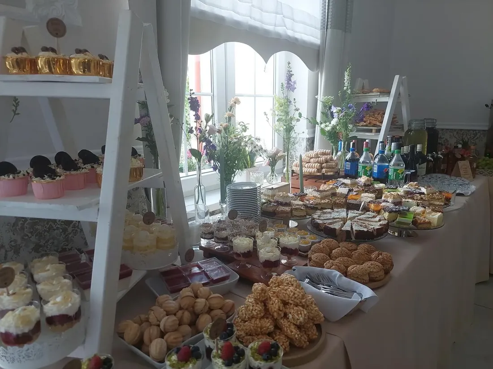

Komunie
Komunia Święta bez stresu i zadłużenia – poznaj sprytne triki, dzięki którym zorganizujesz piękną uroczystość, nie wydając fortuny

Komunia Święta bez stresu i zadłużenia – poznaj sprytne triki, dzięki którym zorganizujesz piękną uroczystość, nie wydając fortuny
Pierwsza Komunia Święta to wyjątkowe wydarzenie w życiu każdego młodego katolika i jego rodziny. Niestety, często wiąże się ono z dużym stresem organizacyjnym i znacznymi wydatkami. Jednak nie musi tak być! Oto kilka sprytnych trików, dzięki którym zorganizujesz piękną uroczystość komunijną, nie wydając fortuny i nie popadając w zadłużenie.
1. Ustal budżet i trzymaj się go
Podstawą organizacji każdego wydarzenia, w tym Komunii Świętej, jest ustalenie realistycznego budżetu.
- Przeanalizuj swoje możliwości finansowe i określ, ile możesz przeznaczyć na uroczystość.
- Zrób listę wszystkich niezbędnych wydatków i przydziel im konkretne kwoty.
- Zostaw około 10% budżetu jako rezerwę na nieprzewidziane koszty.
- Konsekwentnie trzymaj się ustalonego budżetu podczas całego procesu przygotowań.
Pamiętaj, że najważniejszy jest duchowy wymiar uroczystości, a nie jej oprawa materialna. Nie warto zadłużać się, by zorganizować wystawne przyjęcie.
2. Wybierz odpowiedni termin i miejsce
Wybór terminu i miejsca uroczystości może mieć duży wpływ na koszty.
- Jeśli to możliwe, wybierz termin poza szczytem sezonu komunijnego. Uroczystości organizowane w maju są zazwyczaj droższe niż te w czerwcu czy we wrześniu.
- Rozważ organizację przyjęcia w domu lub ogrodzie zamiast w drogiej restauracji. To nie tylko oszczędność, ale także bardziej kameralna atmosfera.
- Jeśli decydujesz się na lokal, porównaj oferty kilku miejsc i negocjuj ceny.
W „Finezji” w Turku oferujemy atrakcyjne pakiety na przyjęcia komunijne, które można dostosować do różnych budżetów. Nasza przestronna sala pomieści do 160 osób, co pozwala na organizację zarówno kameralnych, jak i większych przyjęć.
3. Zaangażuj rodzinę i przyjaciół
Organizacja Komunii Świętej to doskonała okazja do zacieśnienia więzi rodzinnych i przyjacielskich.
- Poproś bliskich o pomoc w przygotowaniach – mogą pomóc w dekorowaniu, przygotowaniu potraw czy opiece nad młodszymi dziećmi podczas uroczystości.
- Zamiast wynajmować profesjonalnego fotografa, poproś uzdolnionego członka rodziny lub przyjaciela o zrobienie zdjęć.
- Jeśli ktoś z rodziny ma talent cukierniczy, może przygotować tort komunijny.
Zaangażowanie bliskich nie tylko obniży koszty, ale także nada uroczystości bardziej osobisty charakter.
4. Postaw na DIY
Własnoręczne wykonanie niektórych elementów uroczystości może znacząco obniżyć koszty i dodać jej unikalnego charakteru.
- Przygotuj samodzielnie zaproszenia i podziękowania dla gości.
- Stwórz własne dekoracje – mogą to być kompozycje kwiatowe, świece czy ozdoby na stół.
- Zrób własne upominki dla gości – mogą to być domowe przetwory, własnoręcznie robione mydełka czy świeczki.
Zaangażuj dziecko w przygotowania – wspólne tworzenie dekoracji czy zaproszeń może być świetną okazją do rozmowy o znaczeniu Komunii Świętej.
5. Mądrze wybierz strój komunijny
Strój komunijny to często jeden z największych wydatków związanych z uroczystością. Oto kilka sposobów na obniżenie tego kosztu:
- Rozważ wypożyczenie alby zamiast kupowania jej – dziecko i tak założy ją tylko raz.
- Jeśli decydujesz się na zakup, poszukaj sukienki czy garnituru, które dziecko będzie mogło nosić przy innych okazjach.
- Sprawdź oferty second-handów lub grup wymiany na Facebooku – często można tam znaleźć prawie nowe stroje komunijne w atrakcyjnych cenach.
- Unikaj kupowania drogich dodatków, które będą założone tylko raz.
Pamiętaj, że najważniejsze jest, aby dziecko czuło się komfortowo w swoim stroju.
6. Przygotuj mądre menu
Jedzenie to często jeden z największych wydatków związanych z przyjęciem komunijnym. Oto kilka sposobów na obniżenie kosztów:
- Zamiast pełnego obiadu, rozważ organizację brunchu lub podwieczorku.
- Postaw na dania, które można przygotować wcześniej i podać na zimno – zmniejszy to stres w dniu uroczystości.
- Zrezygnuj z alkoholu lub ogranicz jego ilość – to nie tylko oszczędność, ale także sposób na utrzymanie bardziej rodzinnej atmosfery.
- Jeśli organizujesz przyjęcie w domu, rozważ catering tylko na część dań, a resztę przygotuj samodzielnie.
W „Finezji” oferujemy elastyczne menu, które można dostosować do różnych budżetów i preferencji. Nasz doświadczony personel pomoże Ci wybrać optymalne rozwiązanie.
7. Postaw na minimalizm w dekoracjach
Piękne dekoracje nie muszą być drogie. Oto kilka pomysłów na oszczędne, ale efektowne ozdoby:
- Wykorzystaj naturalne materiały – kwiaty z ogrodu, gałązki, szyszki.
- Stwórz proste, ale eleganckie kompozycje ze świec.
- Użyj białych obrusów i serwetek – dodadzą one elegancji bez dużych kosztów.
- Zamiast kupować gotowe dekoracje, stwórz je samodzielnie z papieru czy materiałów dostępnych w domu.
Pamiętaj, że nadmiar dekoracji może przytłaczać – czasem mniej znaczy więcej.
8. Mądrze wybierz pamiątki
Pamiątki komunijne to miły akcent, ale nie muszą być drogie:
- Zamiast kupować gotowe pamiątki, przygotuj je samodzielnie – mogą to być własnoręcznie robione zakładki do książek czy małe obrazki.
- Jeśli decydujesz się na zakup, wybierz coś praktycznego, co goście będą mogli wykorzystać – np. małe świeczki czy nasiona kwiatów do posadzenia.
- Rozważ przygotowanie jednej, większej pamiątki dla całej rodziny zamiast indywidualnych upominków dla każdego gościa.
9. Zrezygnuj z niepotrzebnych wydatków
Zastanów się, które elementy uroczystości są naprawdę ważne, a z których można zrezygnować:
- Czy naprawdę potrzebujesz limuzyny do przewozu dziecka do kościoła?
- Czy konieczne jest wynajmowanie profesjonalnego DJ-a na przyjęcie rodzinne?
- Czy potrzebujesz drogich zaproszeń drukowanych na papierze wysokiej jakości?
Często okazuje się, że wiele tradycyjnych elementów uroczystości komunijnej nie jest niezbędnych, a ich brak nie wpłynie negatywnie na przeżycia duchowe dziecka.
10. Skup się na tym, co najważniejsze
Pamiętaj, że Pierwsza Komunia Święta to przede wszystkim uroczystość religijna, a nie okazja do pokazania statusu materialnego:
- Poświęć czas na duchowe przygotowanie dziecka do przyjęcia sakramentu.
- Zaangażuj całą rodzinę w modlitwę i rozmowy o znaczeniu Eucharystii.
- Skup się na tworzeniu ciepłej, rodzinnej atmosfery podczas uroczystości.
Najpiękniejsze wspomnienia dziecka z tego dnia będą związane z przeżyciami duchowymi i bliskością rodziny, a nie z drogimi prezentami czy wystawnym przyjęciem.PodsumowanieOrganizacja Pierwszej Komunii Świętej nie musi wiązać się z dużym stresem i wydatkami. Kluczem do sukcesu jest dobre planowanie, kreatywność i skupienie się na tym, co naprawdę ważne. Pamiętaj, że w „Finezji” w Turku jesteśmy gotowi pomóc Ci w organizacji pięknej uroczystości komunijnej, dostosowanej do Twojego budżetu i potrzeb. Nasza elastyczność i doświadczenie pozwolą Ci cieszyć się tym wyjątkowym dniem bez stresu i nadmiernych wydatków.
Masz pytania o przyjęcie w Finezji? Zadzwoń: 665 188 619 albo zapytaj o wolny termin.
Czytaj dalej

Jak sprawić, by dzień Pierwszej Komunii Świętej był naprawdę wyjątkowy? Odkryj 5 nieoczywistych pomysłów, które zachwycą Twoje dziecko i gości

Pierwsza komunia św. – wzruszające wspomnienia i niezwykłe historie oczami dziecka

Jak przygotowaliśmy catering dla 100 osób w 24 godziny?
Rezerwacje i wizyty
Najlepiej zobaczyć salę na miejscu
Umów się na wizytę – pokażemy salę, kuchnię, pokoje i parking, a przy okazji opowiemy, jak wyglądają przyjęcia u nas. Spotkania także w weekend.
- Telefon
- 665 188 619 · 601 637 397
- biuro@finezja.org
- Adres
- Kaczki Średnie 10c, 62-700 Turek